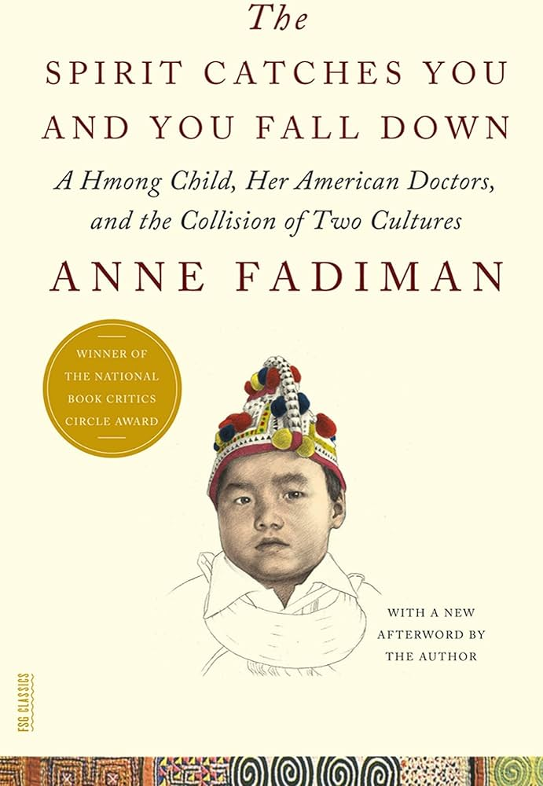
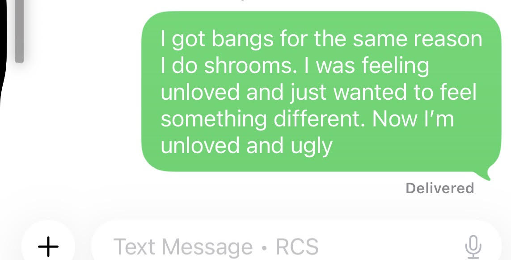

My stepdad is a mild-mannered and loving man. He risked his life when he sat in the passenger seat while teaching the teenage me how to drive. He coached me into holding the gun steady as he taught me to shoot. He balances out my mom with his gentleness. He is also an alcoholic. When I first told him that I liked whiskey, he beamed with blue collar pride and said “Atta, girl!” But even in his drunken stupors, he is the closest thing I have to a father.
I recently met with my mom while in NYC. My mother’s bespectacled face made me homesick. As we ate our desserts, I asked about my dad and my mom made made a confession. Dad’s drinking had gotten worse and my mom was threatening a divorce. After a bad Vegas trip, she told him, “If you don’t clean your act up, so help me God, I will go to a lawyer and divy up our assets!” I pleaded with my mom to show him empathy, and reminded her that addicts often need support from their partners. She gave me a frustrated look. She had tried everything in the book to make him see the light. Crying, begging, bargaining, and giving ultimatums. “Do you know that your father got so belligerently drunk that your brother and I had to lock ourselves in the bedroom? But he eventually passed out so he couldn’t do anything.” I was stunned. It couldn’t be real! My dad was never scary or violent. I imagined my mom trying to comfort sweet Benji. My mom doing all of this alone in Texas.
The next day, my friends and I went to the Met. I wandered through the Medieval section and then went to the decorative arts department. The decorative arts section was filled with gilded trinkets, lush paintings, and ornate furniture. My friend and I saw this cute vase with a contrasting floral and pastel pink pattern. But as my eyes came to the top of the vase, I saw two tacky elephant heads. The light bouncing between the glass displays and the glazed vase shouldn’t have hurt my eyes as much as it did. Did the owners of this vase feel anything when they looked at it? Or was it just an object for rich people to show off? I preferred the humble saint statues from the Medieval section. Among all of the gaudy pieces, I was drawn to the beige sculpture of Temperance. Her stern, marble face was giving the viewer a lecture on vice.
I found myself back at the Medieval section, which was mostly religious art. After all, the Church was the center of the Western world back then. While looking at the virgin statues holding baby Christ, I thought of my mom and Benji. I was trying not to cry. I’m not religious, but if I prayed to her, would she watch over my mom and brother? And would she be able to help my dad? I worry for him. If my family broke up, would it make him want to get sober? Or would it push him to drink more? I worry that my dad will drink himself into the depths of despair and never return home.
06/13/2026: A visit to Bonny Doon.

It’s hard for me to give an unbiased review because it is so deeply intertwined with my family’s history.
The reader is introduced to Lia Lee, a Hmong child with a rare form of epilepsy. The book recounts the ensuing battle for Lia’s life, but the battle in question is between the Hmong culture and the US medical system.
It is obvious that Fadiman is extremely sympathetic to the struggles of the Hmong community. Reading this book stirred up memories that I kept to myself because I wasn’t sure if anyone would understand. In one anecdote, a Hmong mother recounts how babies were drugged with opium as the group fled to Thailand. This transported me back to a certain day. When I was 8, my cousin asked my aunt to recount our family’s journey. After losing the war, my grandfather told the family that they had to leave right away, and they fled into the jungle that night. My aunt mentioned that babies were given opium to stop them from crying, otherwise the entire family would be caught and killed. Families who were caught were sometimes tortured, and some were even made to torture their own relatives. The journey to safety in Thailand was unforgiving and treacherous. Up until this point, I only knew that something bad happened to my family but I didn’t know what. After my aunt finished speaking, I started sobbing because I finally understood what my family had lost.
Fadiman’s sympathy is needed, but is it possible to be TOO sympathetic? I think so. She mentions the Hmong determination for cultural preservation many times but she doesn’t heavily critique it. She says that “Hmong parents are likely to view any earmarks of assimilation as an insult and a threat”. There are no mentions of the negative impacts that this probably had on the younger generation. But for those of us who had parents/grandparents like this, we understand how much strife this causes us. And if one cannot sympathize, then they should imagine being told that they were “too Americanized” for wanting to attend college.

06/02/2026: I hate my hair